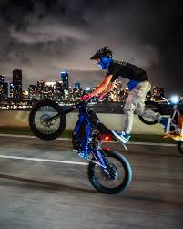
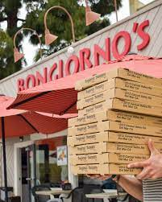

I went to elementary school at Del Mar Heights and middle school at Earl Warren. Of course, I am now attending Canyon Crest Academy, and I feel that it is a great fit for me. For my whole life, mathematics has come very easy to me, and I find it very interesting. In the last few years, theoretical physics has also fascinated me. This year, I am taking many classes which continue to challenge and intrigue me, including physics, computer science, and calculus classes. I plan to go to college to earn a PhD in some kind of particle physics.
 Outside of school, I love to spend time at the gym. I started going a little over a year ago to Crunch at The Village at Pacific Highlands Ranch. Recently, my friends and I have also enjoyed going to Mesa Rim, a rock climbing and bouldering gym. For years, I have spent much time riding bikes, including mountain, electric, and dirt bikes. I spend most of my time on bikes either on jump trails or on the road wheelieing. When at home, I often play video games such as Call of Duty or skate.
 Since the beginning of seventh grade I have been a member of Teen Volunteers in Action, through which I participate in many volunteering events. This includes food drives, beach cleanups, assisting the disabled, and much more. Through CCA, I am participating in the quantum physics club, rock climbing club, Best Seeds, and DECA this year. I have maintained my first job at Bongiorno's New York Pizzeria in Solana Beach since the beginning of this summer. I am currently in the process of securing an internship involving the research and refinement of new high definition imaging technology.